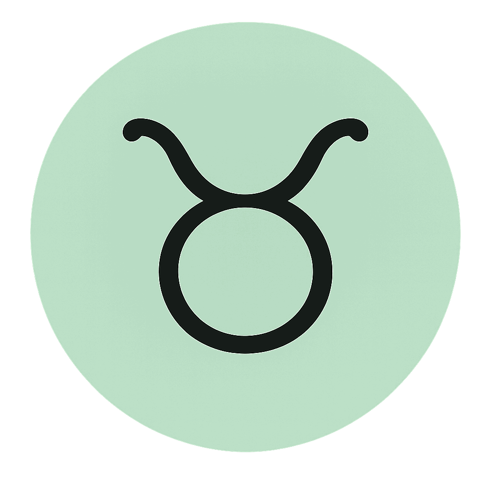
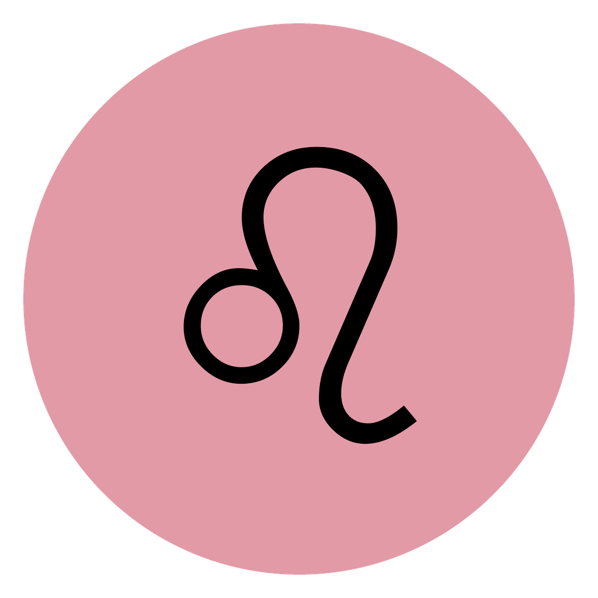
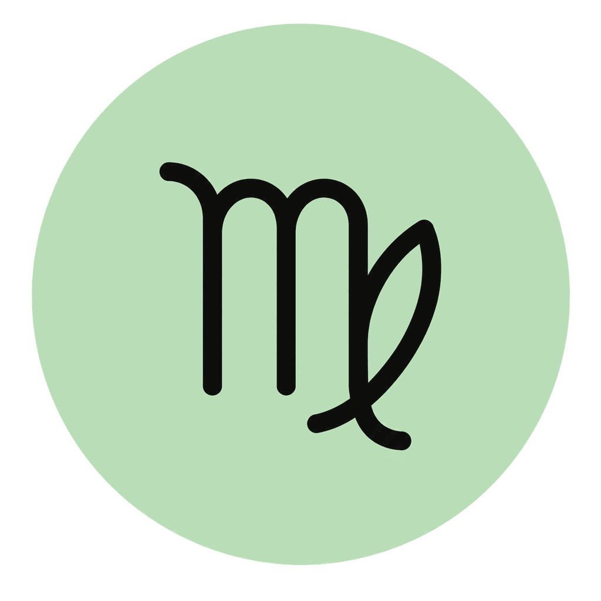
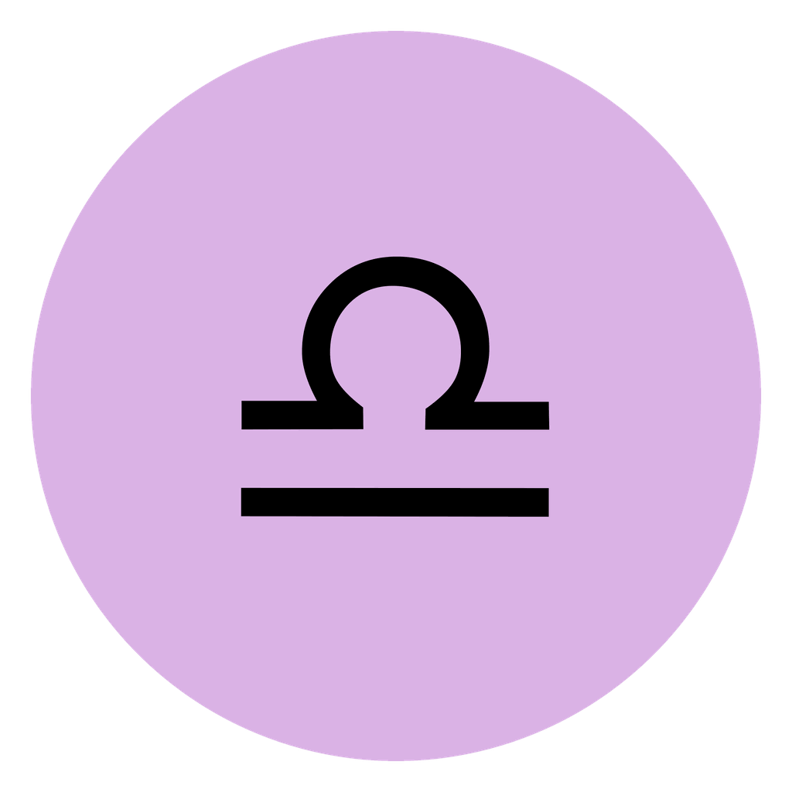
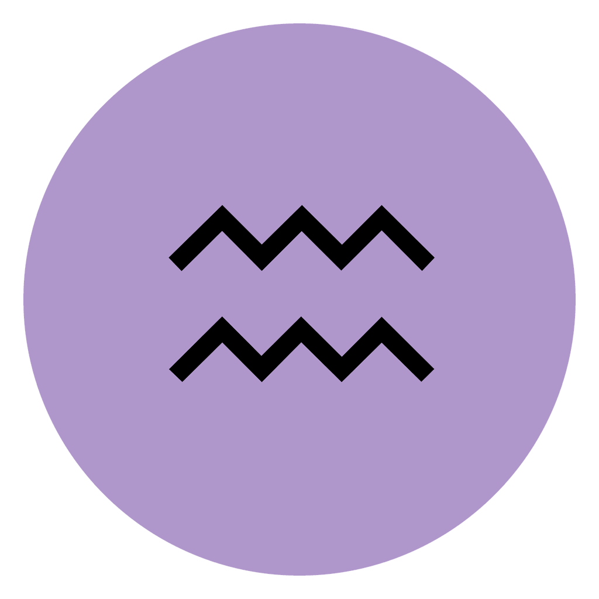

Born with
The signs and placements a user was born with.
The Zodiacs SDK recognizes official Zodiacs, reads public ownership, and turns held signs into optional symbolic context for charts, profiles, share cards, compatibility, seasonal moments, and AI astrology.
Birth charts show one kind of symbolic context. Zodiacs can add another layer when a sign appears in a connected wallet.
Most astrology apps start with a birth chart. Zodiacs adds another read-only layer: signs that appear in a connected wallet. Apps can surface verified holdings, emphasized elements, wheel coverage, and seasonal relevance inside a reading, profile, or moment.
The signs and placements a user was born with.
The signs that appear through public ownership lookup.
Readings, profiles, share cards, compatibility, seasonal moments, and AI astrology.
Verified held signs become part of familiar astrology surfaces, without custody, signing, or transactions.
Natal placements meet the signs a user holds, revealing support, balance, and contrast across the chart.
Born with Fire. Taurus and Virgo bring Earth into the profile.
Held signs, wheel coverage, element mix, modality mix, and current season match in one clean surface.
Aries, Leo, Pisces. Wheel coverage: 25%. Element mix: Fire + Water.
Seasonal moments when the current zodiac season matches a sign the user holds.
Taurus season is active. You hold Taurus. Taurus enters today’s reading.
Charts and held signs together, with shared signs, complementary elements, and relationship themes.
You hold Libra. Their Venus is in Libra. A shared theme appears.
A held Zodiac as a symbolic object with history, duration, and personal meaning.
Scorpio, carried for 90 days, becomes part of the long-term profile.
Structured inputs for astrology assistants: held signs, confirmed absent signs, mix, coverage, and season.
Personalized readings with verified ownership context. No custody. No signing.
A complete astrology product usually combines several layers. Use an astronomical engine or chart service for natal positions, houses, aspects, transits, and calendars. Add Zodiacs SDK only when the product needs to recognize official Zodiacs and turn public ownership into optional identity context.
Computes natal placements, houses, aspects, and chart geometry. This is separate from Zodiacs SDK.
Supplies planetary positions, transits, retrogrades, and dated calendars.
Verifies official addresses, reads public ownership, computes identity facts, and supplies display assets.
Render readings, profiles, shelves, receipts, share cards, or conversations from structured inputs.
Apps can map verified holdings into aura bars, hover text, or share-card copy without changing the SDK. Treat every facet as optional symbolic context: if this appears, it may emphasize a quality in the experience.





The SDK includes icons for all twelve Zodiacs, ready for products that display verified signs in the Zodiacs.org visual language.
Use the icons in Zodiac shelves, identity receipts, birth chart overlays, compatibility cards, seasonal moments, profiles, symbolic resonance displays, and AI astrology interfaces.
import { getZodiacIconAsset } from "@zodiacs/sdk/assets";
const leo = getZodiacIconAsset("leo");
console.log(leo.packagePath);
// "@zodiacs/sdk/assets/zodiac-icons/circle/leo.png"Use the package for the official registry, address verification, read-only ownership, identity context, and Zodiac icon assets.
npm i @zodiacs/sdkuseZodiacIdentityContext, useIdentityReceiptData,
IdentityReceiptCard, and ProfileSummaryCard.
See the GitHub guide for neutral symbolic resonance patterns.
Start with address verification, provenance, public ownership, and identity context.
Resolve a Solana mint or Base address to its sign, chain, and representation type.
import {
getRepresentationByAddress
} from "@zodiacs/sdk/core";
const representation = getRepresentationByAddress(
"0x3ffB5282F5891Dd8c813E64059EdB0607537eC91"
);
console.log(representation?.sign); // "aries"
console.log(representation?.chain); // "base"
console.log(representation?.kind); // "bridged"Use Solana and Base public clients. No custody. No signing.
import { getCrossChainZodiacsOwnership } from "@zodiacs/sdk";
import { mergeZodiacsOwnership } from "@zodiacs/sdk/identity";
const ownership = await getCrossChainZodiacsOwnership({
solana: { ownerAddress: solanaOwner, connection },
base: { ownerAddress: baseOwner, publicClient }
});
const shelf = mergeZodiacsOwnership(ownership);
console.log(shelf.heldSigns);Turn ownership into facts for a profile, shelf, identity receipt, or wheel.
import {
getIdentityReceiptData,
getZodiacIdentityContext
} from "@zodiacs/sdk/identity";
const context = getZodiacIdentityContext(ownership, {
sunSign: "leo"
});
const receipt = getIdentityReceiptData(ownership);
console.log(context.heldSigns);
console.log(context.elementComposition);
console.log(context.currentSeasonHeld);
console.log(receipt.wheelCoverage);An astrology assistant can receive held signs, element and modality composition, wheel coverage, confirmed absent signs, and the current season match. Keep that ownership context separate from the birth chart, include it only when the person opts in, and present it as a symbolic layer rather than proof of character or compatibility.
Pass the verified held-sign array and derived composition directly. Do not ask a model to guess ownership from prose.
The app owns the prompt, disclosure, and interpretation. More holdings never imply a better or more accurate reading.
import { getZodiacIdentityContext } from "@zodiacs/sdk/identity";
const identity = getZodiacIdentityContext(ownership, {
sunSign: "leo"
});
const promptContext = {
heldSigns: identity.heldSigns,
elementComposition: identity.elementComposition,
currentSeasonHeld: identity.currentSeasonHeld,
framing: "Optional carried-sign context beside the birth chart"
};The bundled Simastry Aura example shows one complete product path: read public ownership, compute held-sign context, render it beside a birth-chart sign, and prepare a transparent payload for a share page or an opted-in AI astrologist conversation.
The SDK computes symbolic context from verified public ownership. The source data stays factual, repeatable, and ready to render: held signs, wheel coverage, element and modality composition, and whether the current Zodiac season appears in the shelf.
IdentityReceiptCard
getRepresentationByAddress(address)
The package is organized around registry facts, representation provenance, public reads, identity composition, React helpers, and official display assets.
getZodiacsRegistry
getZodiacAsset
getAllZodiacAssets
isOfficialZodiacAddress
getRepresentationByAddress
assertOfficialZodiacAddress
getNativeCounterpart
getBaseZodiacRepresentation
getSolanaZodiacRepresentation
getSolanaZodiacsOwnership
getBaseZodiacsOwnership
getCrossChainZodiacsOwnership
getZodiacIdentityContext
getIdentityReceiptData
getCurrentZodiacSeason
useZodiacIdentityContext
useIdentityReceiptData
useCurrentZodiacSeason
IdentityReceiptCard
ProfileSummaryCard
getZodiacIconAsset
getAllZodiacIconAssets
getZodiacIconAssetPath
Astrofolio.xyz is a related external consumer project built around personal Zodiac shelves, profiles, share cards, and astrology context. Zodiacs.org is the official registry and SDK source of truth. The SDK remains neutral infrastructure that any app can use for verified ownership, public reads, identity facts, symbolic resonance, and icon assets.
A related product surface for personal Zodiac shelves, profiles, and shareable identity context.
The registry defines official representations; the package supplies verification, ownership reads, context, and assets.
The SDK is made for recognition, verification, metadata, public reads, and identity context. It does not request private keys, provide custody, sign messages, submit transactions, provide approval helpers, or move assets.